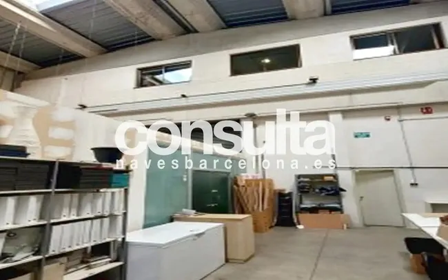
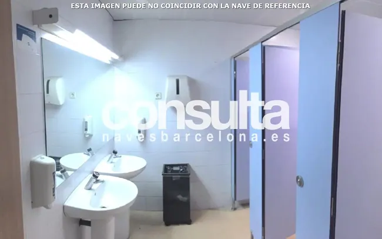
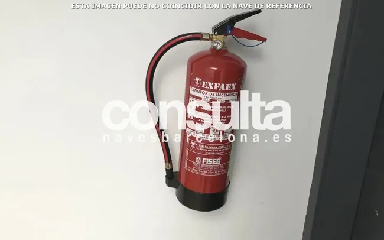
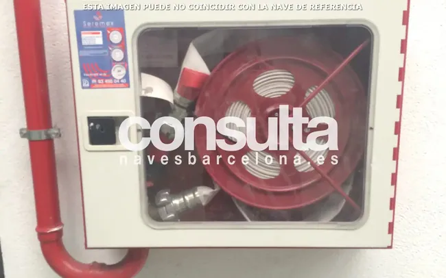

Plano · tocar un número de la lista lo marca acá
Letras: condiciones go/no-go · o: obra necesaria · números: lo que hay que medir o confirmar · c: lo que el chequeo de circulación marca hoy · trazos: el área o la franja de la cota · la línea azul: el largo libre a lo largo de la pista · ejes x/z: el origen de las cotas.
Condiciones go/no-go · si alguna sale mal, la nave se cae o hay que rehacer el layout
- Con margenDecide: ≥ 6,25 m libres bajo jácenas, cerchas, luminarias e instalaciones en la vertical de la plataforma: plataforma a 3,45 m + 2,4 m del rider + 0,4 m de instalaciones (PROGRAMA §1). Si da menos, se baja la plataforma (a lo medido − 2,8 m), nunca el run-out.Altura libre medida con láser sobre la plataforma (m):
11 notas del layout
fuente de la cota: foto (match): cara inferior de las jácenas a ≈7,0 m, no 9 m. fotocasa 00 (3 jácenas equiespaciadas a 1, 2 y 3 vanos de la cámara: horizonte y extremos en la medianera NE dan ≤ 5,2 m sobre la cámara), p5368_-1 (hiladas de 20 cm del bloque de la medianera SO: jácena a ≈1,35 m y coronación de la medianera a ≈2,15 m sobre la cámara, en el altillo) y fotocasa 02 (puerta de 2,1 m: forjado ≈4,2-4,4, coronación del frente del altillo ≈7,2-8,1). Los «9 m» del anuncio (Consulta, Nolkers, Estrada) cuadran con la altura máxima a cumbrera, no con la libre
riesgo: La dirección publicada no coincide con Catastro: hay que confirmar el número antes de visitar. En las naves 41-49 la parte a doble altura mide entre ≈27,7 y ≈24,4 m libres y esta pista no entra: habría que acortar la rampa y bajar la plataforma a ≈3,1 m en la 41 y ≈2,2 m en la 49.
riesgo: Sin trampolines: con 3 líneas, el retorno y el despacho existente quedan 3,35 m al lado de la pista, y una cama con sus colchonetas necesita ≥ 6 m de ancho. Solo entrarían bajando a 2 líneas (contra la prioridad pista > pad > trampolines); bajo el altillo o encima no hay altura para saltar.
riesgo: Apoyos del altillo y pilares: en foto solo sale la pilastra del frente. Abrir el frente de PB para el lounge y el paso puede exigir un dintel nuevo. Hay que pedir el plano de estructura (pilares, jácenas y forjado) antes de presupuestar.
riesgo: Extintores: la punta de la plataforma queda a ≈22 m de recorrido (la escalera de 8 m alarga la bajada) del extintor más cercano. Hace falta uno más colgado en la barandilla de la plataforma, junto a la llegada de la escalera, que el plano no deja dibujar en altura. BIE y extintores son nuevos, porque las fotos de los existentes son genéricas.
riesgo: Alturas medidas en fotos (match): libre bajo jácena ≈7,0 m ± 0,4, no los 9 m del anuncio. Hay que medirla en la visita. Con la plataforma a 3,45 m la pista entra mientras la libre sea ≥ 6,25 m. Si sale menos, se baja la plataforma, nunca el run-out. El airbag y los kickers altos de fase 2 cuentan con ≤ 6,6 m útiles.
supuesto: La nave es la de C/ Alemanya 39 (ver cotejo). Si fuera otra de la hilera 41-49, el ancho es el mismo pero la parte a doble altura mide entre ≈0,6 y ≈3,9 m menos.
supuesto: Pórticos cada ≈8 m en z = 4 / 12 / 20 / 28 / 36 (estimados: no confirmados por las fotos, que chocan con la PNOA y entre sí; ver «match: pórticos»): los lucernarios de la PNOA caen a mitad de vano y el frente del altillo coincide con el pórtico de z = 28. Jácena I de ≈1,1 m de canto con la cara inferior a ≈7,0 m (medida en fotos, ±0,4 m; ver «match: alturas»); cubierta al ≈10 %, con el alero a ≈7,9 m y la cumbrera a ≈8,65 m (pendiente supuesta, coherente con el canto de la jácena en p5368_-1; ver «match: cumbrera»). Los 9 m del anuncio no coinciden con ninguna cota medida: se toman como cifra redondeada de la altura máxima. La altura libre de 7,0 m tiene ±0,4 m; la cámara resuelta de p5368_-1 admite hasta ≈7,5-8 según dónde caiga el horizonte, y fotocasa 00 la acota por arriba en ≈7,3-7,4.
supuesto: 3 líneas de 3,0 m: con el retorno, el pad y el despacho existente no entran 4. Plataforma de 2 m de fondo a 3,45 m, rampa de 8,35 m, llano de 9 m, run-out de 8 m en L2-L3 y quarter de 1,2 m en L1 (la avanzada, contra la medianera SO). Así la salida del run-out queda del lado del retorno. La longitud la fija la parte a doble altura, de 28,3 m.
supuesto: medir en la visita: altura libre bajo jácena (7,0 ± 0,4 por fotos) y altura a cumbrera (8,65 supuesta con pendiente del 10 %; el anuncio dice 9 m).
supuesto: medir en la visita: cota de antepecho y dintel de las 3 ventanas del frente del altillo (fotocasa 02 / foto 01; se suponen a ≈5,5-6,6 m) y si el muro del fondo de fotocasa 01 es ese frente: en 01 la banda bajo la última jácena se ve y no tiene ventanas.
- Se decide en la visitaDecide: ≥ 27,35 m en línea recta a lo largo de la pista (plataforma 2 m, rampa, llano y el final más largo, run-out ≥ 8 m), del muro detrás de la plataforma a un pilar después del final. Si da menos, se acorta la rampa o el llano y se baja la plataforma, nunca el run-out.Distancia del muro a un pilar, a lo largo de la pista (m):
1 nota del layout
riesgo: La longitud de la pista es la mínima de PROGRAMA §1 (llano de 9 m, run-out de 8 m). Hay que medir in situ la distancia del testero NO al frente del altillo: si da menos de 28,3 m, se baja la plataforma, nunca el run-out.
- Se decide en la visitaDecide: Dos salidas o más a la calle o a un espacio exterior seguro, con recorridos de evacuación ≤ 50 m (CTE DB-SI 3 §3, tabla 3.1), y sus puertas con ≥ 0,80 m de paso y 2,10 m bajo el dintel. Cada salida nueva solo vale si el muro da a la calle o a un patio con salida y la propiedad deja abrirla (las obras, en «Obra necesaria»).
- acceso acristalado de 3,8 m en la arista 2 (hueco 1, x 11,6 · z 40,4): nueva (en el hueco del portón TIR 0) · obra o1
- puerta peatonal de 1,6 m en la arista 2 (hueco 2, x 1,1 · z 40,4) · solo cuenta con la obra o3 (puerta nueva en la caja)
- salida de emergencia de 1,6 m en la arista 0 (hueco 7, x 11,55 · z 0,49): nueva (hay que abrirla) · obra o2
Salidas confirmadas (cuáles, a dónde dan, ancho de paso):10 notas del layout
riesgo: Programa ajustado: el pad queda en 37,2 m² (PROGRAMA pide 40) y la recepción no está elevada ni ve la pista. El retorno mide 1,85 m libres (PROGRAMA §1: 1,8): para eso el pad se corrió 0,3 m hacia la medianera NE; más largo no entra sin cerrar el paso a la salida NO (1,25 m frente a la esquina de la escalera) ni recortar el despacho acristalado existente. Los vestuarios bajan de 19,5 a 18,0 m² (el mínimo) por el paso de 1,09 m de la fachada, que lleva a la caja de la escalera. Recepción + alquiler suman ≈35 m². No hay bloque de aseos para el público: lo cubren el aseo adaptado y los 4 inodoros de los vestuarios.
riesgo: El forjado del altillo limita el portón TIR a ≈3,5 m de alto. El airbag (6 × 10 m, fase 2) no entra en esta pista y no se pone kicker porque no queda landing; los módulos largos entran por la salida trasera de 1,6 m.
riesgo: El run-out termina a 0,45 m de la cristalera del lounge: hacen falta red de fondo y defensa acolchada delante del vidrio. La salida de 1,2 m del run-out (al NE, al final de L3) da a esa franja de 0,45 m y enseguida al paso de 1,75 m. Conviene además una puerta en la red del lado NE al final del run-out de L3. Para una salida holgada por el final habría que acortar la pista ≈0,8 m (plataforma a ≈3,15 m y de 1,8 m de fondo). La pilastra del frente (x ≈ 7,3) y las de la medianera SO, junto al quarter de L1, van forradas.
riesgo: Obra necesaria si no existe (propuesta de rp-d, 24/11, decisión del usuario): la caja de la escalera de oficinas se dibuja con una puerta interior a la PB de 1,1 m en su muro +x, junto al arranque (z 39,28-40,38), para subir al gym del altillo y para que la puerta de la calle (hueco 2) sea la tercera salida: sin ella no se llega a pie ni al gym ni a esa salida (walkabilityReport: `reach zone:gym` y `exit exit:2`). Las fotos no la muestran (fotocasa 10 ve la caja desde la calle). Si en la visita la caja solo da a la calle, hay que abrir ese hueco (EI2 30-C5 si la caja es protegida) o bajar el gym a la PB. Va como propuesta (`enclosure.door.proposed: true`): la nave como está hoy (`fitout: false`) dibuja la caja cerrada por ese lado, como en las fotos.
riesgo: Evacuación del altillo (rp-evac-a, 25/11; walkabilityReport `evacuation alternative`, 29,2 m → 23,9): el altillo solo baja por la escalera existente en U de su caja, y los dos recorridos alternativos recién se abren en su pie (CTE DB-SI 3 tabla 3.1: 25 m hasta ahí desde cada origen). El gym pasa del rincón NE a la llegada de la escalera (x 3,25-8,95, z 31,15-36,45; los mismos 30,2 m²) y dos tabiques de la propuesta (`cierre-altillo-frente` y `-este`) clausuran lo demás del altillo (las oficinas existentes del frente y del lado NE, ≈85 m²): sin puerta, sin uso y fuera de la actividad (ni almacén ni de personal), sin acceso no tienen puntos ocupables y no son origen de evacuación (DB-SI Anejo A). Usarlas o abrirles una puerta, aunque sea solo de mantenimiento, vuelve `evacuation alternative`: 35,5 m por el tabique del este y 41,0 por el del frente (pasan de 50 m²: el Anejo A cuenta los puntos de las zonas de ocupación nula de más de 50 m²). Lo de detrás de la caja de la escalera queda abierto al gym (23,9 m). No es obra en la nave (la nave de hoy no los dibuja) ni se pierde programa: la oficina del park está en planta baja. Usar el resto de las oficinas pide una segunda bajada o la caja de la escalera protegida (con su puerta EI2 30-C5 a la planta baja, que ya es propuesta: risk 10), cuya puerta sería salida de planta (walk no lo modela): obra, decisión del usuario.
supuesto: La pista arranca contra el testero NO ciego y baja hacia el altillo. Así el run-out termina junto a los servicios, los acompañantes ven la bajada de frente desde el lounge (detrás de una cristalera nueva) y la escalera de la plataforma queda junto a la salida de emergencia. En el sentido contrario, los riders frenarían contra el testero.
supuesto: 3 líneas de 3,0 m: con el retorno, el pad y el despacho existente no entran 4. Plataforma de 2 m de fondo a 3,45 m, rampa de 8,35 m, llano de 9 m, run-out de 8 m en L2-L3 y quarter de 1,2 m en L1 (la avanzada, contra la medianera SO). Así la salida del run-out queda del lado del retorno. La longitud la fija la parte a doble altura, de 28,3 m.
supuesto: Módulos: L1 tubo HDPE antes del quarter, L2 rail recto (el de la demo; su salida cae en el run-out) y L3 cajón de iniciación, junto al retorno, la salida y el pad.
supuesto: Esquina NO: a la salida de emergencia (x 10,75-12,35) se llega por un paso de 1,5 m entre la escalera y el almacén (1,25 m frente a la BIE y al extintor). A ese paso se entra desde el pie de la escalera, con 1,25 m libres hasta la esquina del pad. El almacén de módulos mide 15,3 m² y tiene puerta ancha al paso. Con el taller suman 26,9 m² de taller + almacén.
supuesto: Salida de emergencia nueva de 1,6 m en el testero NO, hacia el patio trasero y C/ Gran Bretanya. Sirve también para entrar módulos largos.
- Se decide en la visitaDecide: Huella ≥ 0,28 m, contrahuella de 0,13 a 0,185 m y 0,54 ≤ 2C + H ≤ 0,70 (CTE DB-SUA 1 §4.2.1); ancho ≥ 1,20 m (PROGRAMA; el CTE pide 1,00-1,10); tramos de ≤ 2,25 m sin descanso. Una escalera existente que no cumple no sirve para el público (gym o altillo): hay que rehacerla o poner otra.
- de la plataforma (escalera-plataforma): huella 0,28 m, contrahuella 0,17 m, ancho 1,29 m, tramo de 1,73 m sin descanso, sube 3,45 m
- existente (escalera-existente): huella 0,25 m, contrahuella 0,17 m, ancho 1,2 m, tramo de 2,1 m sin descanso, sube 4,2 m
Huella × contrahuella × ancho de la escalera existente (m):14 notas del layout
riesgo: Programa ajustado: el pad queda en 37,2 m² (PROGRAMA pide 40) y la recepción no está elevada ni ve la pista. El retorno mide 1,85 m libres (PROGRAMA §1: 1,8): para eso el pad se corrió 0,3 m hacia la medianera NE; más largo no entra sin cerrar el paso a la salida NO (1,25 m frente a la esquina de la escalera) ni recortar el despacho acristalado existente. Los vestuarios bajan de 19,5 a 18,0 m² (el mínimo) por el paso de 1,09 m de la fachada, que lleva a la caja de la escalera. Recepción + alquiler suman ≈35 m². No hay bloque de aseos para el público: lo cubren el aseo adaptado y los 4 inodoros de los vestuarios.
riesgo: Extintores: la punta de la plataforma queda a ≈22 m de recorrido (la escalera de 8 m alarga la bajada) del extintor más cercano. Hace falta uno más colgado en la barandilla de la plataforma, junto a la llegada de la escalera, que el plano no deja dibujar en altura. BIE y extintores son nuevos, porque las fotos de los existentes son genéricas.
riesgo: Obra necesaria si no existe (propuesta de rp-d, 24/11, decisión del usuario): la caja de la escalera de oficinas se dibuja con una puerta interior a la PB de 1,1 m en su muro +x, junto al arranque (z 39,28-40,38), para subir al gym del altillo y para que la puerta de la calle (hueco 2) sea la tercera salida: sin ella no se llega a pie ni al gym ni a esa salida (walkabilityReport: `reach zone:gym` y `exit exit:2`). Las fotos no la muestran (fotocasa 10 ve la caja desde la calle). Si en la visita la caja solo da a la calle, hay que abrir ese hueco (EI2 30-C5 si la caja es protegida) o bajar el gym a la PB. Va como propuesta (`enclosure.door.proposed: true`): la nave como está hoy (`fitout: false`) dibuja la caja cerrada por ese lado, como en las fotos.
riesgo: Evacuación del altillo (rp-evac-a, 25/11; walkabilityReport `evacuation alternative`, 29,2 m → 23,9): el altillo solo baja por la escalera existente en U de su caja, y los dos recorridos alternativos recién se abren en su pie (CTE DB-SI 3 tabla 3.1: 25 m hasta ahí desde cada origen). El gym pasa del rincón NE a la llegada de la escalera (x 3,25-8,95, z 31,15-36,45; los mismos 30,2 m²) y dos tabiques de la propuesta (`cierre-altillo-frente` y `-este`) clausuran lo demás del altillo (las oficinas existentes del frente y del lado NE, ≈85 m²): sin puerta, sin uso y fuera de la actividad (ni almacén ni de personal), sin acceso no tienen puntos ocupables y no son origen de evacuación (DB-SI Anejo A). Usarlas o abrirles una puerta, aunque sea solo de mantenimiento, vuelve `evacuation alternative`: 35,5 m por el tabique del este y 41,0 por el del frente (pasan de 50 m²: el Anejo A cuenta los puntos de las zonas de ocupación nula de más de 50 m²). Lo de detrás de la caja de la escalera queda abierto al gym (23,9 m). No es obra en la nave (la nave de hoy no los dibuja) ni se pierde programa: la oficina del park está en planta baja. Usar el resto de las oficinas pide una segunda bajada o la caja de la escalera protegida (con su puerta EI2 30-C5 a la planta baja, que ya es propuesta: risk 10), cuya puerta sería salida de planta (walk no lo modela): obra, decisión del usuario.
supuesto: Portón TIR de dos hojas de 4,0 × 3,5 m en la fachada SE, bajo el altillo, en la mitad NE (frente al patio de vehículos). Detrás va un frente acristalado con puerta automática (abertura glazed-entrance de 3,8 × 3,45 m en el mismo hueco): es la entrada de público. La peatonal, de 1,0 × 2,1 m con montante acristalado, está al pie de la escalera de oficinas, en la esquina SO. Se supone que la caja de escalera tiene además una puerta interior a la PB por el hueco junto a las taquillas (x 1,8-3,0). Las 3 ventanas de oficinas de la fachada están a ≈5,3 m: dos al SO del rótulo y una sobre el portón.
supuesto: La pista arranca contra el testero NO ciego y baja hacia el altillo. Así el run-out termina junto a los servicios, los acompañantes ven la bajada de frente desde el lounge (detrás de una cristalera nueva) y la escalera de la plataforma queda junto a la salida de emergencia. En el sentido contrario, los riders frenarían contra el testero.
supuesto: Escalera de la plataforma recta, de 1,30 m de ancho y 8,0 m de largo: 2 tramos de 10 contrahuellas de 0,1725 m con huella de 0,28 m, descanso intermedio de 1,2 m y descanso de llegada de 1,2 m junto al lateral de la plataforma (z 1,25-2,45). El descanso se une a la plataforma con una chapa sobre la franja de 0,2 m del murete. Arranca en z 9,25, al final del retorno.
supuesto: Esquina NO: a la salida de emergencia (x 10,75-12,35) se llega por un paso de 1,5 m entre la escalera y el almacén (1,25 m frente a la BIE y al extintor). A ese paso se entra desde el pie de la escalera, con 1,25 m libres hasta la esquina del pad. El almacén de módulos mide 15,3 m² y tiene puerta ancha al paso. Con el taller suman 26,9 m² de taller + almacén.
supuesto: Bajo el altillo (≈3,75 m libres) van el lounge (6,6 × 3,45 m) y el café (2,8 × 3,45 m, en la punta SO, de cara al lounge) detrás de una cristalera nueva que mira al final de la pista, con las 2 expendedoras contra el tabique del fondo; se entra al lounge por el fondo, desde el pasillo de servicios, por 1,36 m entre las macetas y el tabique. El aseo adaptado abre al pasillo de las 50 taquillas (una fila de 7,5 m sin banco: 1,27 m de pasillo); los vestuarios F y M (3,2 × 5,61 = 18,0 m², 2 duchas y 2 inodoros cada uno) abren al mismo pasillo, y detrás de ellos corre por la fachada el paso de 1,09 m desde el vestíbulo hasta la puerta de la caja de la escalera de oficinas. El alquiler (20,4 m²) con su banco para calzarse y la recepción con mostrador en L de 3,6 m y vestíbulo de 2 m siguen igual. El recorrido accesible calle → vestíbulo → recepción → pasillo de 1,25 m → lounge → café, y pasillo de taquillas → aseo adaptado, no tiene escalones ni pasos de menos de 1,20 m (rp-d, 24/11: antes al lounge se llegaba por 0,93 m entre los taburetes del café, a las expendedoras por 0,59 m y al aseo adaptado no se llegaba, porque su puerta daba a los muebles del lounge).
supuesto: Mini gym de 30,2 m² (5,7 × 5,3 m) en el altillo (y = 4,2), en lugar de un despacho del frente: se sube por la escalera existente y se entra por su lado +z, desde las oficinas; el espejo, la tele, el rack y el mancuernero van contra el frente ciego del altillo.
supuesto: plantilla Stoke Mountain adaptada: plataforma 3.45 m × 2.0 m; drop-in de 1.14 m en 3.2 m; 2 terraza(s) de 4.2 m que caen 5° unidas por drops de 0.77 m en 2.6 m; carril de transición en la línea 1 (bajada de 8.87 m, kicker Accelerator y 0 rollers de 0,3 m); 4 módulos a escala real por terraza (T1 cajones cortos, T2 cajón largo / rail / roller, down rail en el último drop), solo donde se llega con velocidad (µ 0,09); misma huella, mismos finales (run-out ≥ 8 m / quarter) y escalera; los módulos anteriores quedan en slope.legacyModules.
supuesto: medir en la visita: las ventanas de oficinas en la fachada SE. fotocasa 08 muestra una tira corrida con antepecho ≈1,1-1,2 m y dintel ≈2,4 m sobre el forjado; faltan su largo, cuántas hay y en qué tramos (el layout pone 3 sueltas). También si la caja de la escalera de oficinas tiene puerta a la PB: en U, solo cabe junto al arranque (z 39,2-40,4) por el lado +x, donde el layout pone el vestuario F.
supuesto: medir en la visita: ancho de paso y hojas de la puerta de calle de la escalera de oficinas (fotocasa 10 da dos hojas, ≈1,6 m de paso y marco ≈1,7-1,8 m) y su distancia a la medianera SO.
supuesto: medir en la visita: si la caja de la escalera de oficinas está cerrada hacia la nave también en −z (hacia el aseo y las taquillas), como pone el layout (en +x la cierra fotocasa 10), y si tiene puerta a la PB.
- Se decide en la visitaDecide: Ningún pilar dentro de la pista; los de la franja de 0,2 m del murete y la red, forrados (el murete se corta en cada uno); el pasillo de retorno, ≥ 1,80 m libres con los pilares.Posición y sección de los pilares junto a la pista (m):
3 notas del layout
riesgo: Apoyos del altillo y pilares: en foto solo sale la pilastra del frente. Abrir el frente de PB para el lounge y el paso puede exigir un dintel nuevo. Hay que pedir el plano de estructura (pilares, jácenas y forjado) antes de presupuestar.
riesgo: El run-out termina a 0,45 m de la cristalera del lounge: hacen falta red de fondo y defensa acolchada delante del vidrio. La salida de 1,2 m del run-out (al NE, al final de L3) da a esa franja de 0,45 m y enseguida al paso de 1,75 m. Conviene además una puerta en la red del lado NE al final del run-out de L3. Para una salida holgada por el final habría que acortar la pista ≈0,8 m (plataforma a ≈3,15 m y de 1,8 m de fondo). La pilastra del frente (x ≈ 7,3) y las de la medianera SO, junto al quarter de L1, van forradas.
riesgo: La red y la línea de riego van sobre el murete, dentro de la franja de 0,2 m (el visor ya las dibuja ahí). En el lado SO las pilastras de medianera entran 0,15 m en esa franja: el murete se corta en cada una y se forran. Las 2 pilastras de la medianera NE (z ≈ 12 y 20) quedan dentro del murete del pad y también van forradas (validate.py avisa «pilar dentro de pad-iniciacion»).
- Se decide en la visitaDecide: Confirmar con la agencia o la propiedad la dirección, la referencia catastral y qué nave es (las fotos y las superficies tienen que ser de esta).Referencia catastral y número confirmados:
1 nota del layout
riesgo: La dirección publicada no coincide con Catastro: hay que confirmar el número antes de visitar. En las naves 41-49 la parte a doble altura mide entre ≈27,7 y ≈24,4 m libres y esta pista no entra: habría que acortar la rampa y bajar la plataforma a ≈3,1 m en la 41 y ≈2,2 m en la 49.
- Se decide en la visitaDecide: Lo que no se ve en las fotos y puede cambiar la obra: puentes grúa, forjados que tienen que aguantar el gym, muros que habría que tirar, cubiertas de fibrocemento.Qué se vio (y qué papel hay que pedir):
2 notas del layout
riesgo: El mini gym va en el altillo y no hay ascensor, así que no tiene recorrido accesible; todo lo de público queda en PB. Hay que comprobar que el forjado de oficinas aguanta el rack y los discos.
riesgo: Apoyos del altillo y pilares: en foto solo sale la pilastra del frente. Abrir el frente de PB para el lounge y el paso puede exigir un dintel nuevo. Hay que pedir el plano de estructura (pilares, jácenas y forjado) antes de presupuestar.
Obra necesaria · lo que la nave no tiene hoy y la propuesta necesita: decisiones del usuario, a ver en la visita si se puede
- nuevo, en el hueco del portón TIR 0Obra: Frente acristalado con puerta automática de 2 hojas detrás del portón TIR (que queda abierto en horario); es la entrada de públicoEn la visita: Va en el hueco del portón TIR 0, que se conserva: medir su paso libre (ancho y alto) y ver que puede quedar abierto en horario con acceso acristalado detrás.
- Es la entrada de público: el chequeo de circulación mide desde ella.
- Es una de las 3 salidas que cuenta el chequeo de circulación.
De dónde sale
fuente: propuesta: frente acristalado con puerta automática de 2 hojas detrás del portón TIR (que queda abierto en horario); es la entrada de público
Visto: - hueco nuevoObra: Salida nueva al patio trasero de tierra hacia C/ Gran Bretanya (PNOA); el testero NO no muestra huecos (p5368_-1); con 1,6 m de paso libre desde el retornoEn la visita: Que el paño de muro dé a la calle o a un espacio exterior seguro (si da a una nave vecina, solo vale como salida de planta, con un vestíbulo de independencia o un pasillo protegido: CTE DB-SI Anejo A), que en el hueco no haya pilares, bajantes ni instalaciones, y que la propiedad deje abrirlo.
- Es una de las 3 salidas que cuenta el chequeo de circulación.
De dónde sale
fuente: propuesta: salida nueva al patio trasero de tierra hacia C/ Gran Bretanya (PNOA); el testero NO no muestra huecos (p5368_-1); con 1,6 m de paso libre desde el retorno
Visto: - puerta nueva en la cajaObra: Una puerta de 1,1 m en el muro +x de la caja (z 39,28-40,38), que hoy va cerrada por ese lado.En la visita: Si la caja ya tiene una puerta a la planta baja por ese lado (las fotos no la muestran): si la tiene, su paso libre y su altura; si no, que el muro se pueda abrir (es obra, con la puerta que pida el técnico si la caja es una escalera protegida).
- La puerta peatonal 2 (la de la calle) da a la caja: sin esta puerta no se llega a ella desde la planta baja y deja de contar como salida.
- Sin ella, desde la planta baja no se sube a pie por esta escalera.
De dónde sale (2)
fuente: fotocasa 10 (tramos, peldaños de piedra, barandilla negra, puerta de calle al pie); match3: en U, con el tramo 1 pegado a la medianera SO bajando hacia la puerta de calle y el tramo 2 al lado subiendo hacia la fachada, descanso intermedio al fondo (z 35-36,2) y llegada al forjado en la franja de la fachada (r3-10-despues.jpg); posición de la caja estimada; caja de obra en +x (fotocasa 10: los extremos de los peldaños del tramo 2 van contra un muro claro continuo con zócalo escalonado y el vestíbulo del pie está cerrado a la izquierda, con el extintor), que la separa del vestuario F, y en −z (no sale en ninguna foto: cerrada por ser el acceso independiente de las oficinas); hoy sin puerta a la PB (ninguna foto la muestra) · mezz-fronts (fotocasa 10, reality fc10): escalera de obra, maciza, peldaño y tabica de piedra crema con banda antideslizante oscura y barandilla de barrotes de forja negra (finish stone); la caja revocada en crema (#e8dcc8, medido contra la pared de la derecha); la medianera SO de dentro de la caja sigue de bloque (un muro -x de la caja pisaba el aseo adaptado y la fachada) · o10-wb-walls: la caja, su escalera de obra y los tramos de la medianera y la fachada que quedan dentro, del mismo enlucido crema: #e3ceb3, medido en fc10 con park.photo() (la medianera de la derecha: foto L* 68,0 a* +2,3 b* +9,4; con #e8dcc8 Rust daba L* 71,6 b* +4,7) · rp-d (24/11): puerta de 1,1 m en el muro +x de la caja, junto al arranque (z 39,28-40,38), al paso de 1,09 m que corre por la fachada detrás de los vestuarios hasta el vestíbulo: así se llega a pie a la salida de la calle (hueco 2) y al gym del altillo. Es de la propuesta (`proposed: true`; obra necesaria si la caja solo da a la calle: notes.risks, TRANSITABILIDAD.md): la nave como está hoy la dibuja sin ella
riesgo 11: Obra necesaria si no existe (propuesta de rp-d, 24/11, decisión del usuario): la caja de la escalera de oficinas se dibuja con una puerta interior a la PB de 1,1 m en su muro +x, junto al arranque (z 39,28-40,38), para subir al gym del altillo y para que la puerta de la calle (hueco 2) sea la tercera salida: sin ella no se llega a pie ni al gym ni a esa salida (walkabilityReport: `reach zone:gym` y `exit exit:2`). Las fotos no la muestran (fotocasa 10 ve la caja desde la calle). Si en la visita la caja solo da a la calle, hay que abrir ese hueco (EI2 30-C5 si la caja es protegida) o bajar el gym a la PB. Va como propuesta (`enclosure.door.proposed: true`): la nave como está hoy (`fitout: false`) dibuja la caja cerrada por ese lado, como en las fotos.
Visto:
Medir y confirmar en la visita · 12, de las notas del layout
-
Detalle
medir en la visita:
El layout los pone en 3,75 / 11,75 / 19,75 / 27,75 / 35,75 por los lucernarios de la PNOA, pero fotocasa 00 y p5368_-1 apuntan a ≈2 m más hacia el testero (1 / 9 / 17 / 25). Si se confirma, se corren las pilastras (las de la medianera NE entran en el pad).
Medido: -
Detalle
medir en la visita:
Medido: -
Detalle
medir en la visita:
También si la caja de la escalera de oficinas tiene puerta a la PB: en U, solo cabe junto al arranque (z 39,2-40,4) por el lado +x, donde el layout pone el vestuario F.
Medido: -
Detalle
medir en la visita:
Medido: -
Detalle
medir en la visita:
Medido: -
Detalle
medir en la visita:
Medido: -
Detalle
match: pórticos (estimados, NO confirmados). Se mantienen en z = 3,75 / 11,75 / 19,75 / 27,75 / 35,75 porque así los 3 lucernarios de la PNOA (z ≈ 7,7 / 15,6 / 23,6) caen a mitad de vano, pero las fotos no lo confirman y chocan entre sí: (1) p5368_-1 (desde la ventana del altillo, z ≈ 28,4): resolviendo la cámara con los extremos de la jácena próxima en las dos medianeras (arriba y abajo), la esquina SO del testero, la inclinación de la pilastra NE y el punto de fuga de las cintas del suelo (≈ 309 / 333 px), sale un objetivo angular (f ≈ 520 px, ≈69° vertical, giro ≈18° al NE, alabeo ≈4,5°) y la jácena a ≈11,5 m de la cámara (z ≈ 17), ni a 8,45 m (z 19,75) ni a ≈16 m como dio la verificación con el horizonte en y ≈ 280; la cámara no reproduce la escala de las hiladas de la medianera (55 px medidos en el borde izquierdo frente a ≈32), así que la posición no queda fijada. (2) fotocasa 00: las 3 jácenas salen a ≈1,4 / 2,4 / 3,4 vanos de la cámara (verificación, horizonte en y ≈ 455), lo que con pórticos en 3,75 + 8k exige la cámara bajo el altillo; casa mejor con pórticos corridos ≈2 m hacia el testero (p. ej. 1,5 / 9,5 / 17,5 / 25,5, cámara en z ≈ 28,7) o con otra separación. (3) Ninguna foto muestra una jácena en z ≈ 20 por delante de la ventana del altillo si la cámara es la de (1). La hipótesis que mejor encaja con las dos fotos a la vez es la de pórticos en z ≈ 1 / 9 / 17 / 25: fotocasa 00 desde z ≈ 28,3 da jácenas a 1,4 / 2,4 / 3,4 vanos, p5368_-1 da la jácena a z ≈ 17 y los lucernarios de la PNOA quedan todos ≈1,4 m antes de la mitad del vano. Pero no se adopta: exige que la jácena de z = 25 quede fuera del cuadro de p5368_-1, lo que pide un intradós de ≈7,9 m o más (frente a los 7,0 medidos), y movería pilastras dentro del alquiler y del pad.
Medido: -
Detalle
En las naves 41-49 la parte a doble altura mide entre ≈27,7 y ≈24,4 m libres y esta pista no entra: habría que acortar la rampa y bajar la plataforma a ≈3,1 m en la 41 y ≈2,2 m en la 49.
Medido: -
Detalle
La longitud de la pista es la mínima de PROGRAMA §1 (llano de 9 m, run-out de 8 m).
Medido: -
Detalle
Apoyos del altillo y pilares: en foto solo sale la pilastra del frente.
Medido: -
Detalle
Obra necesaria si no existe (propuesta de rp-d, 24/11, decisión del usuario): la caja de la escalera de oficinas se dibuja con una puerta interior a la PB de 1,1 m en su muro +x, junto al arranque (z 39,28-40,38), para subir al gym del altillo y para que la puerta de la calle (hueco 2) sea la tercera salida: sin ella no se llega a pie ni al gym ni a esa salida (walkabilityReport: `reach zone:gym` y `exit exit:2`). Las fotos no la muestran (fotocasa 10 ve la caja desde la calle).
Va como propuesta (`enclosure.door.proposed: true`): la nave como está hoy (`fitout: false`) dibuja la caja cerrada por ese lado, como en las fotos.
Medido: -
Detalle
Con la plataforma a 3,45 m la pista entra mientras la libre sea ≥ 6,25 m. Si sale menos, se baja la plataforma, nunca el run-out. El airbag y los kickers altos de fase 2 cuentan con ≤ 6,6 m útiles.
Medido:
Circulación · lo que el chequeo marca hoy (CTE DB-SI 3, DB-SUA): ver en la visita si el paso real es así
- avisoescalera existente escalera-existente: contrahuellas de 0,175 a 0,175 m y huellas de 0,250 a 0,250 m (C 0,130-0,175, H ≥ 0,280, 0,54 ≤ 2C + H ≤ 0,70; sin ascensor)CTE DB-SUA 1 §4.1, §4.2.1 y §4.2.2 · peldaños de la obra en escalera-existente (contrahuellas de 0,175 a 0,175 m y huellas de 0,250 a 0,250 m): existente, se conserva (PROGRAMA §4) y queda como aviso (montigala)
Fotos que conviene sacar
- Fachada y acera desde enfrente, con la calle a los dos lados (la llegada a pie y en coche, y dónde se aparca).
- Cada puerta (4: portón TIR, acceso acristalado, puerta peatonal, salida de emergencia) desde dentro y desde fuera, con el metro abierto en el paso libre y en la altura.
- La pared del arranque de la pista (detrás de la plataforma) de suelo a cubierta, con la jácena o la cercha de encima y el láser apuntando a su cara de abajo.
- El final de la pista: lo que hay después del run-out (muro, frente del altillo, salida) y el suelo de esa franja.
- Las dos medianeras de punta a punta, para contar pórticos y pilastras y ver si sobresalen.
- La cubierta y los lucernarios desde el centro de la nave, mirando a cada testero (para la luz del 3D y el estado de las placas).
- El suelo: estado, juntas, desniveles, sumideros y arquetas.
- El cuadro eléctrico, la acometida de agua y los desagües (vestuarios y aseos nuevos).
- El frente del altillo de punta a punta, y debajo: la altura libre, sus pilares y sus puertas.
- La escalera existente de lado, con el metro en una huella y una contrahuella, y su llegada arriba.
- B. Largo libre para la pista: una foto con la medida a la vista.
- C. Salidas y evacuación: una foto con la medida a la vista.
- D. Escaleras: peldaños, ancho y tramos: una foto con la medida a la vista.
- E. Pilares en la pista, su franja o el retorno: una foto con la medida a la vista.
- F. Que sea la nave del anuncio: una foto con la medida a la vista.
- G. Estructura, cubierta e instalaciones: una foto con la medida a la vista.
- o1. Obra necesaria (x 11,6 · z 40,4): el sitio desde dentro y, si se puede, desde fuera, con lo que hay detrás.
- o2. Obra necesaria (x 11,55 · z 0,49): el sitio desde dentro y, si se puede, desde fuera, con lo que hay detrás.
- o3. Obra necesaria (x 2,9-3,1 · z 39,28-40,38): el sitio desde dentro y, si se puede, desde fuera, con lo que hay detrás.
- Repetir desde el mismo sitio las fotos del anuncio de abajo (el móvil a la altura de los ojos, sin zoom): con la nave medida se vuelven a ajustar las cámaras y el plano.



